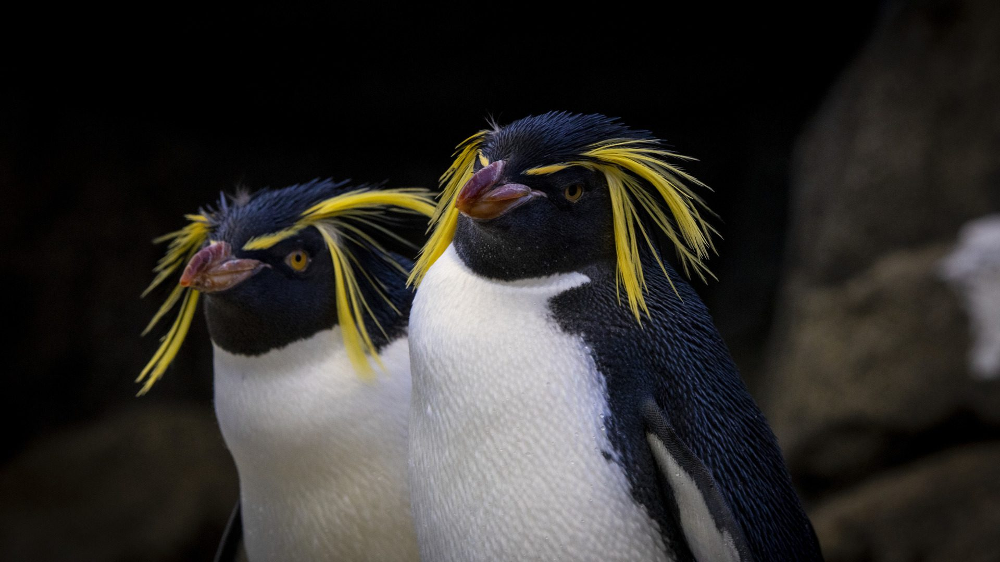
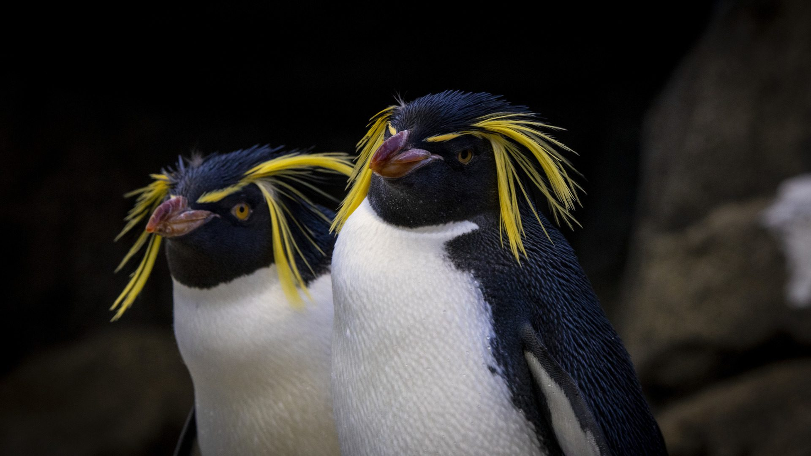
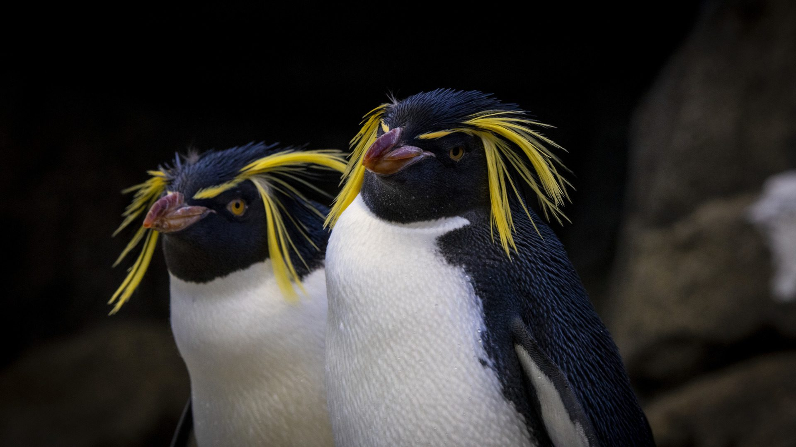

Penguin Talk!

 

Penguin Talk!
Penguins are pretty comical birds, baby penguins are unimaginably cute, and I love how they all waddle. They may not be able to fly but instead they're incredible swimmers. Being able to survive in the freezing temperatures of Antartica is very impressive and their huddle method to keep warm is very cute.
Interesting Penguin Facts:
Enjoy this penguin media!
@abcnews Captured on camera for the first time ever, hundreds of six-month-old emperor penguin chicks were filmed taking a leap of faith off of a 50-foot cliff in Antarctica. One baby penguin took a polar plunge into the sea, with other chicks following suit soon after. A National Geographic team filmed this rare behavior via drone in January 2024. Credit @natgeo ♬ original sound - ABC News
@zookeeper.tune.44 Penguin problems, just to name a few 😉 🐧 #penguin #zookeeper #animals #fyp #problems ♬ original sound - Zookeeper Tune
@lucasthepenguin #PENGUINS — best animal fr #silly #cute #penguins #antartica #fyp #seanimals #ocean #sea #oceananimals #saveantartica ♬ 部屋の窓辺 - Lamp
